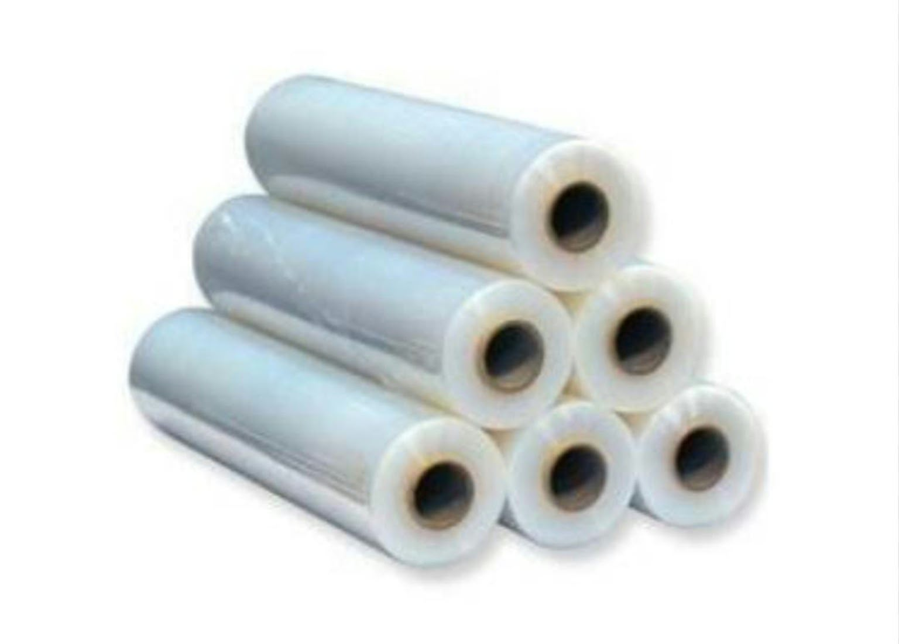

Stretch Film Roll Supplier in Bengaluru

Quality Stretch Film Rolls for Packaging
Shinde Packaging Products supplies stretch film rolls for industrial packaging, pallet wrapping, bundling and securing goods during storage and transportation.
Stretch film helps hold products together and protect packaged goods from dust and movement during handling and transportation.
Uses of Stretch Film
- Pallet wrapping and load securing
- Industrial and warehouse packaging
- Bundling cartons and products
- Protecting goods during transportation
Why Choose Shinde Packaging Products?
- Packaging material supplier in Bengaluru
- Bulk supply options
- Multiple packaging product options
- Quotation assistance
Contact Us for Stretch Film Rolls
Shinde Packaging Products
Bengaluru, Karnataka, India
Phone: +91 6361177533
Phone: +91 9449889992
Stretch Film Roll Sizes Available
Shinde Packaging Products supplies stretch film rolls in different widths to meet various industrial and packaging requirements.
- 75 mm (3 inches)
- 100 mm (4 inches)
- 150 mm (6 inches)
- 200 mm (8 inches)
- 300 mm (12 inches)
- 500 mm (20 inches)
- 600 mm (24 inches)
Contact Shinde Packaging Products in Bengaluru for pricing, bulk orders and product enquiries.
Frequently Asked Questions About Stretch Film
1. What is stretch film used for?
Stretch film is used for wrapping pallets, securing cartons, bundling products and protecting goods during storage and transportation.
2. What widths of stretch film rolls are available?
We supply stretch film rolls in 75 mm, 100 mm, 150 mm, 200 mm, 300 mm, 500 mm and 600 mm widths.
3. Where can I buy stretch film rolls in Bengaluru?
Contact Shinde Packaging Products in Bengaluru for stretch film enquiries, pricing and bulk orders.